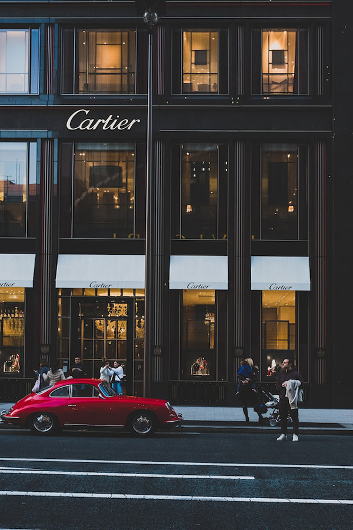

Ginza is a district of Chūō, Tokyo, located south of Yaesu and Kyōbashi, west of Tsukiji, east of Yūrakuchō and Uchisaiwaichō, and north of Shinbashi. It is a popular upscale shopping area of Tokyo, with numerous internationally renowned department stores, boutiques, restaurants and coffeehouses located in its vicinity. It is considered to be one of the most expensive, elegant, and luxurious city districts in the world.
By day, Ginza is an upscale business district and high-fashion shopping destination boasting one of the largest concentrations of luxury brands in the world. As night falls, it transforms into one of Tokyo’s premium entertainment districts, with scores of decadent fine-dining restaurants (including many of Tokyo’s best sushi shops), chic bars, and opulent nightclubs.
Much of Ginza’s nightlife is hidden from plain view, with many of the best bars and restaurants tucked away on the upper floors of nondescript buildings. At many establishments, you can expect to be met with hefty bills along with rather exclusive entrance policies.
Genius is perhaps the quintessential Ginza luxury clubbing experience, where some of Tokyo’s best-dressed and most affluent come together. If you’re in search of a more casual atmosphere, Ginza is also home to a handful of renowned cocktail bars, such as Star Bar, as well as its fair share of hip artsy bars (try 300 Bar or Suki Bar) for something a little easier on the wallet.